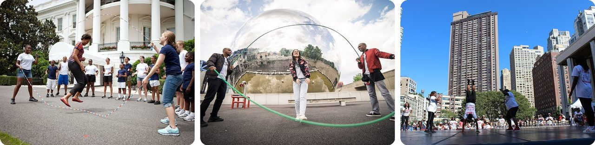

🌍 Top 10 Sport à la maison et exercices express pour les enfants
20 novembre 2026
1. 🇷🇺 Le kettlebell était d'abord un poids de marché
 Dans la Russie du XVIIIᵉ siècle, une girya (une boule en fonte avec une poignée) n'avait rien d'un accessoire de sport. Les marchands s'en servaient comme poids pour peser les récoltes au marché.
Dans la Russie du XVIIIᵉ siècle, une girya (une boule en fonte avec une poignée) n'avait rien d'un accessoire de sport. Les marchands s'en servaient comme poids pour peser les récoltes au marché.
Au XIXᵉ siècle, les hommes forts du cirque la faisaient tournoyer devant le public, et bientôt tout le monde s'est mis à la soulever pour le sport. La taille classique, c'est un poud, une vieille unité russe d'environ 16 kg (36 lb), à peu près le poids d'un enfant moyen de 4 ans.
Et voilà l'astuce : l'essentiel du poids se trouve en dehors de ta main, pas dans ton poing. Alors, dans un swing, la force vient d'un coup de hanches vers l'avant, pas des bras qui soulèvent.
En gros, c'est un poids de balance de marché qui s'est enfui à la salle de sport.
2. 🏴 Le « dumbbell » anglais est une cloche qui ne sonne jamais
 Dans l'Angleterre du XVIIᵉ siècle, sonner les cloches d'église devient un loisir à la mode, et des gens installent chez eux des machines d'exercice qui imitent une cloche. Chacune a deux barres croisées lestées aux extrémités, qui tournent sur un axe, avec une corde qui pend pour tirer.
Dans l'Angleterre du XVIIᵉ siècle, sonner les cloches d'église devient un loisir à la mode, et des gens installent chez eux des machines d'exercice qui imitent une cloche. Chacune a deux barres croisées lestées aux extrémités, qui tournent sur un axe, avec une corde qui pend pour tirer.
Tirer la corde donnait l'impression de sonner une vraie cloche, mais il n'y avait pas de cloche, donc aucun bruit. En vieil anglais, muet se disait « dumb ». En 1711, l'écrivain Joseph Addison raconte s'entraîner avec une « dumb bell » (une « cloche muette ») dans un magazine appelé The Spectator.
Mais l'idée de soulever des poids à la main est bien plus ancienne : les Grecs de l'Antiquité utilisaient des poids appelés haltères, et les gardaient même en main pour le saut en longueur.
Autrement dit, c'est s'entraîner à sonner les cloches… sans la cloche.
3. 🇺🇸 Le burpee a été inventé comme un test rapide du cœur
 En 1939, un scientifique américain, Royal H. Burpee, invente ce mouvement pour son doctorat à l'université Columbia. Sa version n'avait que quatre étapes : t'accroupir les mains au sol, lancer les pieds en arrière en planche, les ramener d'un saut, te relever.
En 1939, un scientifique américain, Royal H. Burpee, invente ce mouvement pour son doctorat à l'université Columbia. Sa version n'avait que quatre étapes : t'accroupir les mains au sol, lancer les pieds en arrière en planche, les ramener d'un saut, te relever.
On ne le faisait que quatre fois. Ensuite, il mesurait ton pouls pour voir à quelle vitesse ton cœur se calmait, un signe de sa capacité à pomper le sang.
En 1942, l'armée américaine en fait un test de vitesse : combien en 20 secondes ? 8, c'était faible ; 13 ou plus, excellent. Aujourd'hui, le record est de 38 burpees poitrine au sol en une minute, soit environ un toutes les 1,6 seconde.
C'est un examen médical devenu l'exercice qu'on adore détester.
4. 🇺🇸 Les jumping jacks portent le nom d'un jouet à ficelle
 Un « jumping jack », c'était un pantin en bois. Tu tires sur sa ficelle, et ses bras et ses jambes s'écartent sur les côtés. Tu lâches, et ils reviennent d'un coup.
Un « jumping jack », c'était un pantin en bois. Tu tires sur sa ficelle, et ses bras et ses jambes s'écartent sur les côtés. Tu lâches, et ils reviennent d'un coup.
Les gens ont fait le même mouvement comme exercice et ont emprunté le nom du jouet. Une histoire très connue raconte qu'en 1885, à l'académie militaire de West Point, un élève plus âgé, John « Black Jack » Pershing, faisait faire ce mouvement aux nouveaux en tirant une ficelle imaginaire.
Le record est de 136 jumping jacks en une minute, établi au Népal en 2023. Ça fait plus de deux par seconde.
À chaque saut, tu joues au pantin.
5. 🇯🇵 Une séance Tabata complète dure seulement 4 minutes
 En 1996, le professeur japonais Izumi Tabata (田畑泉) teste une toute petite séance sur des patineurs de vitesse olympiques. Pédaler sur un vélo d'appartement à fond pendant 20 secondes, se reposer 10 secondes, et recommencer 8 fois. Ça fait 4 minutes.
En 1996, le professeur japonais Izumi Tabata (田畑泉) teste une toute petite séance sur des patineurs de vitesse olympiques. Pédaler sur un vélo d'appartement à fond pendant 20 secondes, se reposer 10 secondes, et recommencer 8 fois. Ça fait 4 minutes.
Au bout de 6 semaines, ces athlètes ont gagné à peu près autant d'endurance qu'un groupe qui pédalait à rythme régulier 60 minutes par jour. Et seul le groupe des 4 minutes est aussi devenu meilleur pour les courts efforts à fond.
L'étude utilisait un vélo, mais ce même chrono « 20 secondes d'effort, 10 de pause » sert aujourd'hui pour toutes sortes de mouvements.
Vois ça comme une séance complète plus courte qu'une chanson pop.
6. 🇺🇸 Le Double Dutch a grandi sur les trottoirs de New York avec des cordes à linge

Au Double Dutch, deux personnes font tourner deux longues cordes en sens opposés pendant qu'un sauteur bondit entre elles. Dans les années 1940 et 1950, des filles noires de New York en ont fait un sport de coin de rue, souvent avec des cordes à linge.Au début des années 1970, deux policiers new-yorkais, Ulysses Williams et David Walker, en écrivent les règles officielles, et la première vraie compétition a lieu en 1974. En 2009, c'est devenu un sport officiel dans les lycées publics de New York.
Le nom viendrait peut-être d'un vieil argot anglais : « double Dutch » voulait dire un charabia incompréhensible, une blague sur l'air embrouillé des cordes.
En gros, c'est de la corde à sauter avec deux fois plus de corde et deux fois plus de rythme.
7. 🇦🇺 La folie du hula hoop a commencé avec des cerceaux en bambou en Australie
 À Sydney, en Australie, un professeur faisait tourner des cerceaux en bambou autour de la taille de ses élèves en cours de sport. Les cerceaux ont eu tant de succès qu'une entreprise de jouets australienne a commencé à les fabriquer en plastique en 1957, et en a vendu 400 000 cette année-là.
À Sydney, en Australie, un professeur faisait tourner des cerceaux en bambou autour de la taille de ses élèves en cours de sport. Les cerceaux ont eu tant de succès qu'une entreprise de jouets australienne a commencé à les fabriquer en plastique en 1957, et en a vendu 400 000 cette année-là.
Puis l'entreprise américaine Wham-O a fait sa propre version en plastique, appelée hula hoop d'après le hula, la danse hawaïenne qui fait onduler les hanches. En 1958, il coûtait 1,98 dollar.
La suite est folle : 25 millions de cerceaux vendus en moins de quatre mois. Environ 200 000 par jour.
Un jouet de cours de sport est devenu viral bien avant Internet.
8. 🇺🇸 Le trampoline doit son nom à un plongeoir espagnol
 En 1936, deux gymnastes de l'université de l'Iowa, George Nissen et Larry Griswold, voient des trapézistes de cirque rebondir sur leur filet de sécurité. Ils tendent une toile sur un cadre en fer avec des ressorts et construisent le premier trampoline moderne.
En 1936, deux gymnastes de l'université de l'Iowa, George Nissen et Larry Griswold, voient des trapézistes de cirque rebondir sur leur filet de sécurité. Ils tendent une toile sur un cadre en fer avec des ressorts et construisent le premier trampoline moderne.
En le présentant au Mexique à la fin des années 1930, Nissen entend le mot espagnol trampolín, qui veut dire « plongeoir », et le garde comme nom.
Et voilà la surprise : la toile elle-même ne s'étire presque pas. Ce sont les ressorts tout autour qui stockent l'énergie et te renvoient en l'air. Pendant la Seconde Guerre mondiale, la marine américaine utilisait même des trampolines pour aider les pilotes à savoir où est le haut quand ils tournoient dans les airs.
Le rebond vit donc dans les ressorts, pas dans la toile.
9. 🇺🇸 Le médecin d'un président américain a inventé un jeu avec un ballon de 6 livres
 Après la victoire d'Herbert Hoover à l'élection de 1928, son médecin, Joel T. Boone, veut le garder en forme. Il invente le Hooverball, inspiré d'un jeu que Hoover a vu des marins pratiquer sur un cuirassé de la marine.
Après la victoire d'Herbert Hoover à l'élection de 1928, son médecin, Joel T. Boone, veut le garder en forme. Il invente le Hooverball, inspiré d'un jeu que Hoover a vu des marins pratiquer sur un cuirassé de la marine.
C'est comme le volley, sauf que tu attrapes un lourd médecine-ball et que tu le relances par-dessus un filet de 8 pieds (2,4 m). Le ballon pèse environ 6 livres (2,7 kg), à peu près comme une petite boule de bowling. On compte les points comme au tennis.
On y joue encore : un championnat national a lieu chaque année à West Branch, dans l'Iowa.
Imagine un volley où il faut attraper une boule de bowling.
10. 🇨🇿 Le record du monde de gainage dure plus qu'une journée d'école
 La planche a l'air facile : tenir la position des pompes sur les avant-bras et la pointe des pieds, sans bouger. Mais justement parce que tu restes immobile, les muscles du ventre, du dos et des épaules travaillent tout le temps.
La planche a l'air facile : tenir la position des pompes sur les avant-bras et la pointe des pieds, sans bouger. Mais justement parce que tu restes immobile, les muscles du ventre, du dos et des épaules travaillent tout le temps.
En mai 2023, le Tchèque Josef Šálek a tenu 9 heures, 38 minutes et 47 secondes. C'est plus long qu'une journée d'école entière.
Et ça ne sert pas qu'aux abdos. Une grande analyse de 270 études a montré que les exercices immobiles, comme la planche et la chaise contre le mur, faisaient mieux baisser la tension que les autres types de sport.
C'est un concours de regards avec le sol.
Le saviez-vous ?
Les kettlebells et les haltères avaient un cousin : les massues indiennes, des massues en bois que des soldats d'Inde et de Perse auraient fait tournoyer pour se muscler. Les traditionnelles pouvaient peser jusqu'à 35 kg (77 lb), mais l'armée britannique a ensuite adopté des versions légères de 2 kg (4,4 lb), et la massue a même été une épreuve olympique en 1904 et en 1932. Puis, au XIXᵉ siècle, un certain DeWitt Cook a commencé à s'en servir pour jongler, et elles ont inspiré les massues que les jongleurs lancent aujourd'hui. Les tours de cirque et la jonglerie cachent bien d'autres surprises de ce genre.
Crédits photo (Wikimedia Commons)
- #1: Kettlebell truebalance romeike.jpg by Detlef Romeike, CC BY-SA 2.5
- #1: Competition kettlebell 16 kilo.jpg by Knuckles, CC BY-SA 3.0
- #1: Kettlebell voor fitness 6 kg.jpg by Richardkiwi, CC BY-SA 4.0
- #2: Colorful dumbbells of various sizes.jpg by Ser Amantio di Nicolao, CC BY-SA 4.0
- #2: Rudolf Ismayr's Dumbbells, 1936.jpg by New York-air, CC BY-SA 4.0
- #2: Kurzhanteln 2 x 15 kg 2v2.jpg by Singlespeedfahrer, CC0
- #3: Airborne Burpee.jpg by Marine Corps photo by Sgt. Ryan Young, Public domain
- #3: Burpee 2 Squat.jpg by Taco fleur, CC BY-SA 4.0
- #3: CrossFit Open 12.1 - Burpees - Chris, Shane, and Adam, and Matt.jpg by Travis Isaacs (photos · photo sets), CC BY 2.0
- #4: Elementary school students conduct jumping jacks to warm up USMC-120214-M-MA421-288.jpg by Lance Cpl. Ryan M. Joyner, Public domain
- #4: Marie Anker um 1875.jpg by upload by Adrian Michael, Public domain
- #4: John Walters, right, a physiologist with the Health and Wellness Center, leads children in jumping jacks prior to participating in the Children's Mobility Line at Dover Air Force Base, Del., Aug. 22, 2013 130822-F-BO262-028.jpg by Roland Balik, Public domain
- #5: Women's 5000m Speed Skating Pair 8.jpg by Robert Scoble, CC BY 2.0
- #5: Stationary bikes at a gym.jpg by KeepActive Australia from Melbourne, VIC, Australia, CC BY-SA 4.0
- #5: A session of a boot camp exercise at Orji Flyover Owerri, Imo State.jpg by Dolphyb, CC BY-SA 4.0
- #6: Michelle Obama and kids double-dutch jump rope - P071511CK-0303 (6047842208).jpg by The White House from Washington, DC, Public domain
- #6: Double Dutch - The Ropestylers 3.jpg by Brandon Mongila, CC BY-SA 4.0
- #6: Elders of National Double Dutch League Performing.jpg by Kbwords, CC BY-SA 4.0
- #7: Girl twirling Hula Hoop, 1958.jpg by GeorgeLouis, CC BY-SA 3.0
- #7: One hula hoop (flickr) by quinn.anya, CC BY-SA 2.0
- #7: Hula Hoop OBS.jpg by Schorle, CC BY-SA 4.0
- #8: Girl jumping on trampoline with belts.jpg by Dmitry Rozhkov, CC BY-SA 3.0
- #8: Trampoline jump king.JPG by Øyvind Holmstad, CC0
- #8: Dian Nissen jumping at a trampoline park.jpg by Triffis, CC BY-SA 3.0
- #9: Hooverball Game on White House Lawn - DPLA - 7489e19fdef6a93ca88e3fe4f391f0c2.jpg by National Archives and Records Administration. Office of Presidential Libraries. Herbert Hoover Library. 4/1/1985, Public domain
- #9: MALS-24 latches onto Hooverball 130125-M-RT812-198.jpg by Christine Cabalo, Public domain
- #9: Herbert Hoover NHS - Hooverball trophies.jpg by Ser Amantio di Nicolao, CC BY-SA 4.0
- #10: Plank.jpg by Jaykayfit, CC BY-SA 3.0
- #10: Woman performing plank exercise at home gym.jpg by Shixart1985, CC BY 2.0
- #10: Medicine Ball Plank.jpg by Jgcastor, CC BY-SA 3.0


.jpg){kind=link}